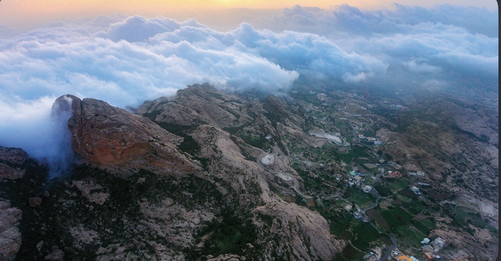
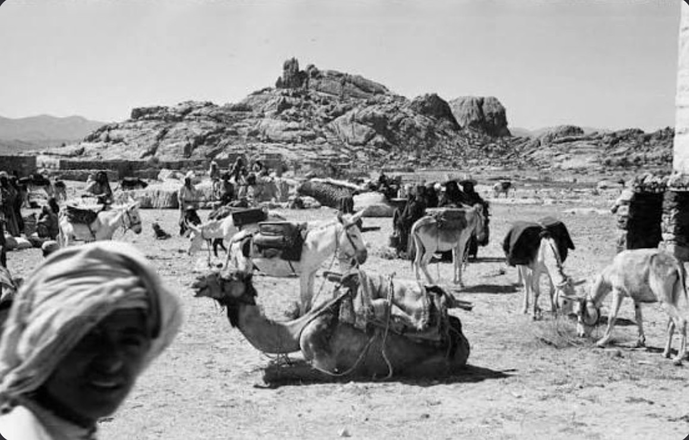
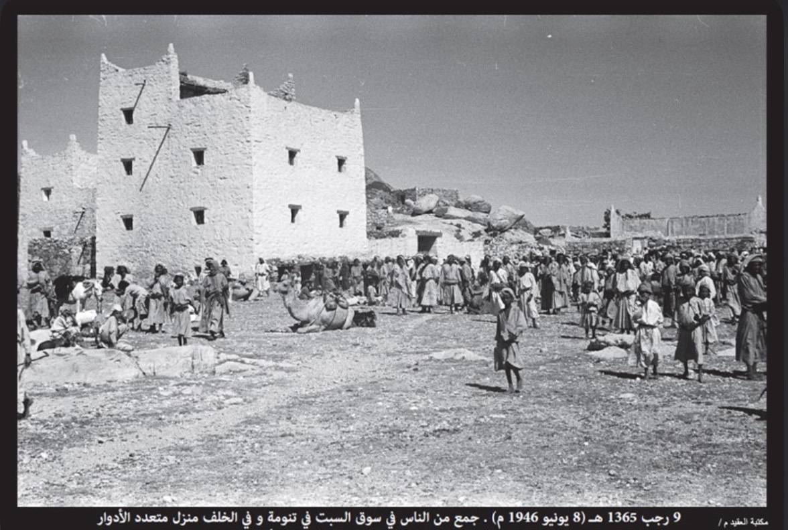
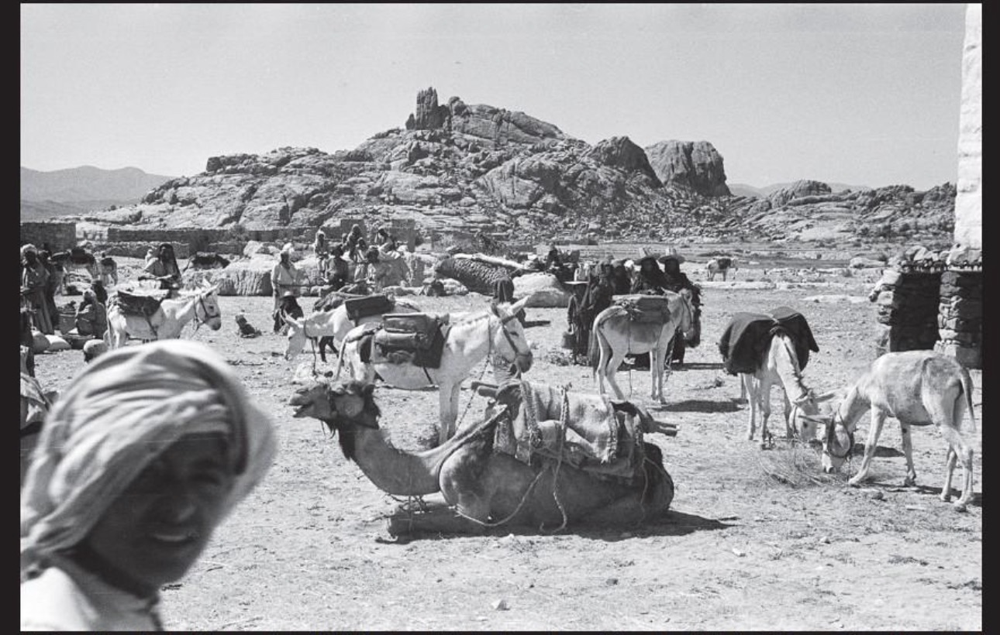
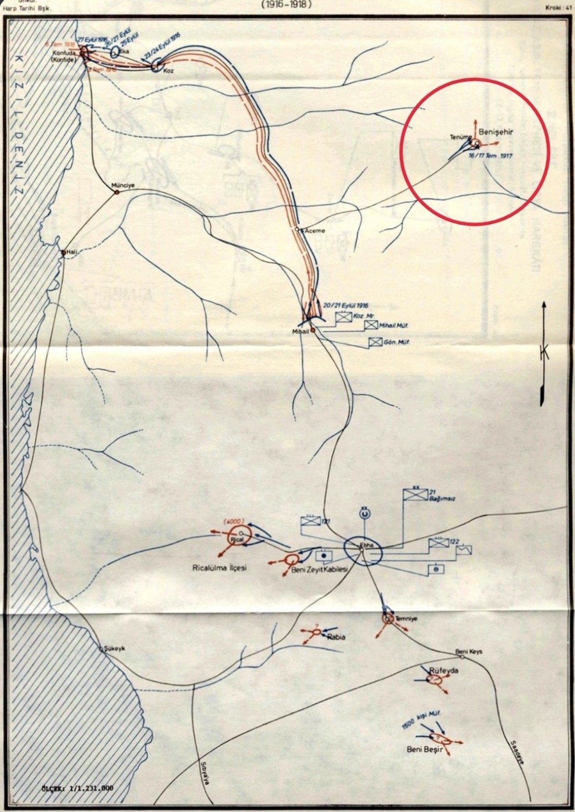

عن الشعفين
تُخصّص هذه الصفحة لكل ما يتعلق بالشعفين عامة، من النسب العام، والتقسيم، والامتداد الجغرافي، وما يتصل بهوية الشعفين ومواطنهم وموروثهم المشترك.
الشعفين (آل يزيد)
آل يزيد اسمٌ نسبي، إذ إنهم من ذرية الحارث بن شهر، وكان هذا الاسم يُطلق في القديم على معظم القبائل التي تُعرف اليوم باسم الشعفين. ومع تعاقب الزمن غلب المسمى الجغرافي على الاسم النسبي، فاشتهروا باسم الشعفين أكثر من الاسم القديم.
واسم الشعفين مأخوذ من الشعف أو الأشعاف، ويُطلق على المناطق الجبلية المشرفة على أغوار تهامة. ومن المسميات المتداولة في بلادهم: شعف آل عظاة، وشعف آل قاصلة، وشعف آل معافا، وشعف آل مروح.
التقسيم العام
تنقسم قبيلة الشعفين إلى قسمين كبيرين هما: آل محمد بن يزيد، وبنو غراب. ويتفرع من هذين القسمين عدد من القبائل والفخوذ المعروفة في تنومة وما حولها، وتُعد الشعفين من القبائل العريقة والكبيرة في بني شهر، ولها امتداد في تهامة وحضور معروف في تاريخ المنطقة.
شاهد شعري
وللتدليل على شيوع اسم آل يزيد في الماضي، يُستشهد بما قاله الشاعر عامر بن رحاح من بلحصين في سبت تنومة سنة 1341هـ بعد عودة العوامر من غزوة مترك:

أهم الجبال والمواضع
من المواضع التي ورد ذكرها في المادة المحلية عن بلاد الشعفين: جبل عيسى غرب قرى آل مروح، وجبل بطنان شمال غرب بطنان، وجبل لمع رعدان الواقع وسط تنومة، ويعد حاجزًا طبيعيًا بين تنومة العليا والسفلى، وحوله طريقا عقبة آل زخران شرقًا وخرق ابن السميح غربًا. كما يُذكر جبل جلالة المشرف على المحفار، وجبل عبدالله الواقع غرب تنومة والمشرف على أغوار تهامة، ويُذكر أيضًا صدر أول بوصفه من أشهر المواضع في المنطقة.
موجز عام
الشعفين من قبائل بني شهر، وينقسمون في تنومة إلى عدد من العشائر المعروفة، وتمتد مواضعهم بين القرى الجبلية في تنومة والشعوف المطلة على تهامة، كما تتبعهم أقسام في البادية وتهامة.
الامتداد الجغرافي
تنتشر مواضع الشعفين في سبت تنومة وما حولها، وارتبط اسمهم بتاريخ السوق الأسبوعي القديم الذي عُرف بسبت تنومة أو سبت بن العريف، كما تحفظ الروايات المحلية لهم حضورًا في الجبال والشعاف والقرى المجاورة.

مدقال رجال الشعفين
مقطع مرئي يتصل بمدقال رجال الشعفين، ويُدرج هنا بوصفه جزءًا من المادة العامة المرتبطة بالموروث والهوية والوجدان المشترك عند الشعفين.
معركة آل زخران
صفحة مختصرة عن واحدة من الوقائع المرتبطة بتاريخ الشعفين وبني شهر في مرحلة المواجهة مع الدولة العثمانية.
قصة المعركة
تُذكر معركة آل زخران ضمن الوقائع البارزة في تاريخ المقاومة المحلية للدولة العثمانية في تنومة، وترد في الروايات بوصفها من المعارك التي اشتد فيها القتال بين رجال بني شهر والقوات العثمانية. وترتبط هذه الوقعة بموضع وادي آل زخران، كما تُذكر ضمن الأحداث التي حفِظت الذاكرة الشعبية شيئًا من أخبارها وآثارها.
ومن الرجال الذين يبرز ذكرهم في هذه الوقعة الشيخ فَرّاس بن محمد بن علي آل زخران الشهري، إذ تذكر الروايات أنه كان من القادة في الميدان، وتولى قيادة سرية كاملة، وكان له مع أبناء قبيلته دور بارز في انتصار بني شهر وإجلاء الأتراك من المنطقة.


مواد بصرية ووثائق
تُعرض هنا صورة لوادي آل زخران، وهو الموضع المرتبط بسياق المعركة، إلى جانب خريطة عثمانية تاريخية تساعد في تقريب الإطار الجغرافي والعسكري للأحداث في تلك المرحلة. وتُدرج هذه المواد في الصفحة العامة للشعفين لأنها تتصل بتاريخهم المشترك وسياقهم الأوسع، لا بقبيلة واحدة فقط.